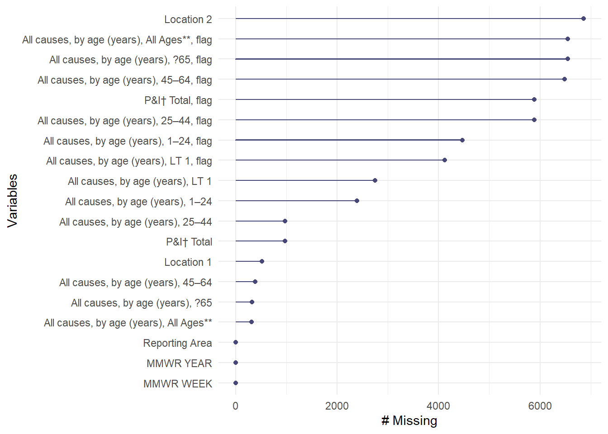
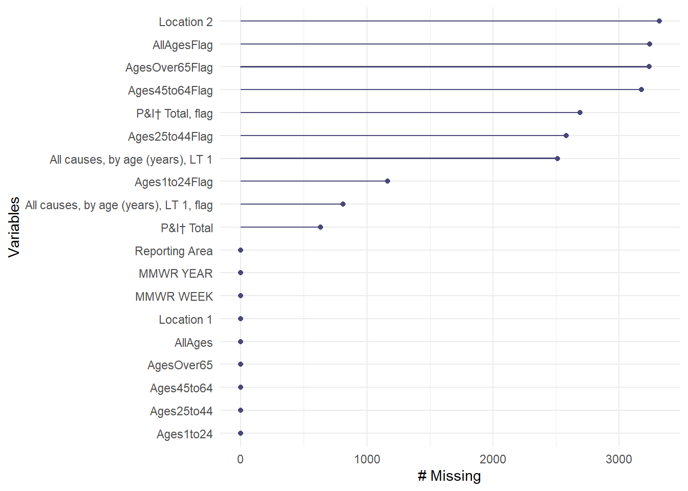
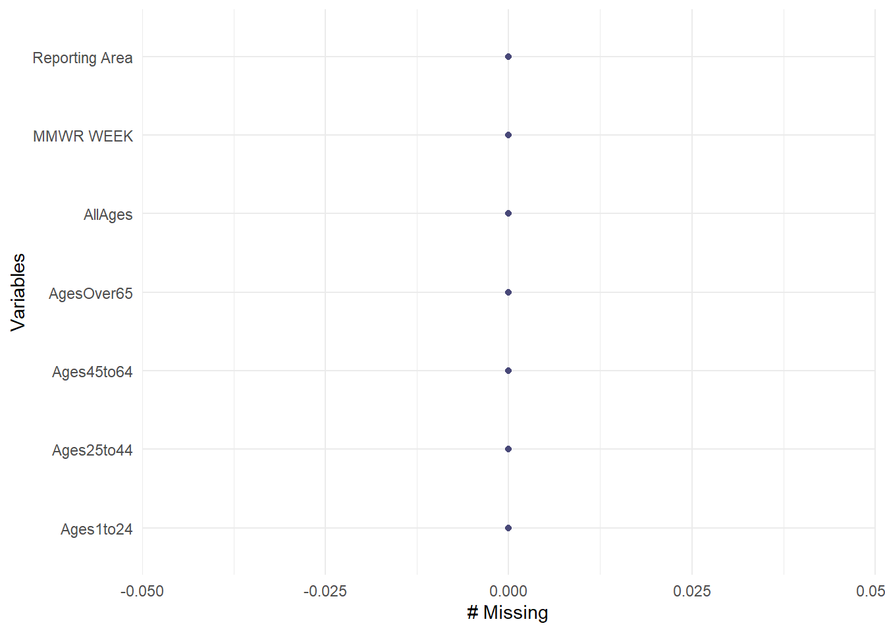
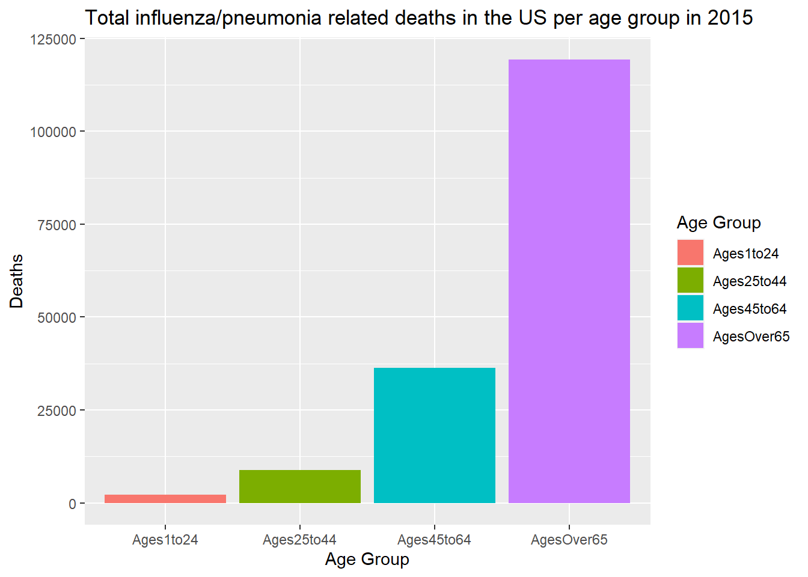
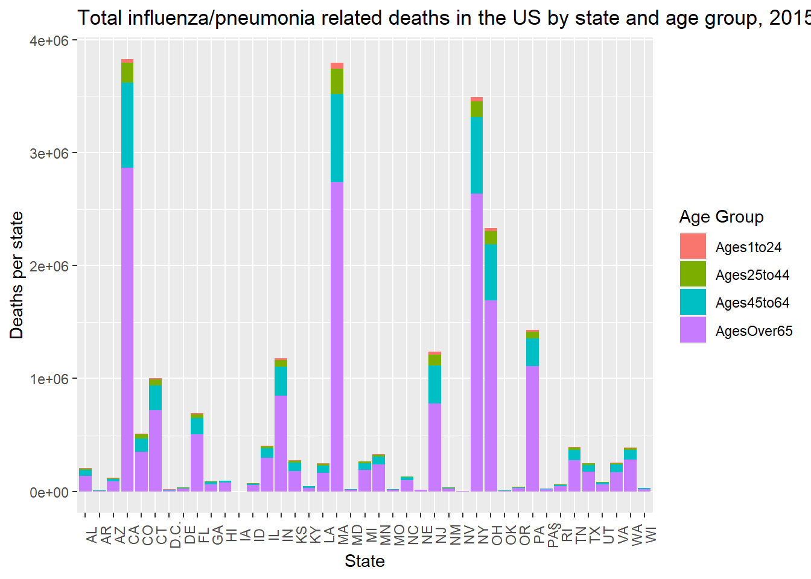

library(tidyverse)
library(readr)
library(dplyr)
library(naniar)Data Analysis Exercise
This page will be used for my first exercise in data analysis involving data importing and wrangling.
Describing the data source
I chose the use the CDC dataset documenting the deaths in 122 US cities from pneumonia or influenza by age group in 2015. These deaths were counted if the death certificates indicated that pneumonia or influenza was listed as underlying or contributed as cause of death. The data was obtained by voluntary reporting from each city for each week of 2015. If data was unavailable, a “U” was inputted, and if no cases were reported, a dash (-) was inputted.
Potential research question
When I came across this dataset, my initial research question was to explore the trends in pneumonia and influenza deaths in 2015 by age groups. This can also be further analyzed by city, state, or even region of the US. For now, I will focus on setting up a complete dataset by age group.
Load packages
Importing the data
To import the data, I will be using read_csv() from the readr package.
# import data and assign to deathdata
deathdata <- read_csv("dataanalysis_exercise/rawdata/TABLE_III._Deaths_in_122_U.S._cities.csv")Rows: 6864 Columns: 19
── Column specification ────────────────────────────────────────────────────────
Delimiter: ","
chr (9): Reporting Area, All causes, by age (years), All Ages**, flag, All c...
dbl (9): MMWR YEAR, MMWR WEEK, All causes, by age (years), All Ages**, All c...
lgl (1): Location 2
ℹ Use `spec()` to retrieve the full column specification for this data.
ℹ Specify the column types or set `show_col_types = FALSE` to quiet this message.#view general aspects about data
summary(deathdata) Reporting Area MMWR YEAR MMWR WEEK
Length:6864 Min. :2015 Min. : 1.00
Class :character 1st Qu.:2015 1st Qu.:13.75
Mode :character Median :2015 Median :26.50
Mean :2015 Mean :26.50
3rd Qu.:2015 3rd Qu.:39.25
Max. :2015 Max. :52.00
All causes, by age (years), All Ages**
Min. : 1.0
1st Qu.: 40.0
Median : 78.0
Mean : 278.1
3rd Qu.: 151.0
Max. :15261.0
NA's :313
All causes, by age (years), All Ages**, flag All causes, by age (years), ?65
Length:6864 Min. : 1.0
Class :character 1st Qu.: 28.0
Mode :character Median : 53.0
Mean : 188.5
3rd Qu.: 101.0
Max. :10569.0
NA's :318
All causes, by age (years), ?65, flag All causes, by age (years), 45–64
Length:6864 Min. : 1.00
Class :character 1st Qu.: 8.00
Mode :character Median : 18.00
Mean : 63.68
3rd Qu.: 36.00
Max. :3361.00
NA's :379
All causes, by age (years), 45–64, flag All causes, by age (years), 25–44
Length:6864 Min. : 1.00
Class :character 1st Qu.: 2.00
Mode :character Median : 5.00
Mean : 18.21
3rd Qu.: 11.00
Max. :858.00
NA's :976
All causes, by age (years), 25–44, flag All causes, by age (years), 1–24
Length:6864 Min. : 1.000
Class :character 1st Qu.: 1.000
Mode :character Median : 3.000
Mean : 8.201
3rd Qu.: 5.000
Max. :299.000
NA's :2394
All causes, by age (years), 1–24, flag All causes, by age (years), LT 1
Length:6864 Min. : 1.000
Class :character 1st Qu.: 1.000
Mode :character Median : 2.000
Mean : 7.233
3rd Qu.: 5.000
Max. :232.000
NA's :2747
All causes, by age (years), LT 1, flag P&I† Total P&I† Total, flag
Length:6864 Min. : 1.00 Length:6864
Class :character 1st Qu.: 3.00 Class :character
Mode :character Median : 6.00 Mode :character
Mean : 19.83
3rd Qu.: 12.00
Max. :1339.00
NA's :973
Location 1 Location 2
Length:6864 Mode:logical
Class :character NA's:6864
Mode :character
str(deathdata)spc_tbl_ [6,864 × 19] (S3: spec_tbl_df/tbl_df/tbl/data.frame)
$ Reporting Area : chr [1:6864] "Albany, NY" "Allentown, PA" "Buffalo, NY" "Camden, NJ" ...
$ MMWR YEAR : num [1:6864] 2015 2015 2015 2015 2015 ...
$ MMWR WEEK : num [1:6864] 4 4 4 4 4 4 4 4 4 4 ...
$ All causes, by age (years), All Ages** : num [1:6864] 61 30 100 31 17 ...
$ All causes, by age (years), All Ages**, flag: chr [1:6864] NA NA NA NA ...
$ All causes, by age (years), ?65 : num [1:6864] 47 22 75 13 12 55 19 866 27 NA ...
$ All causes, by age (years), ?65, flag : chr [1:6864] NA NA NA NA ...
$ All causes, by age (years), 45–64 : num [1:6864] 11 4 19 9 2 11 4 188 9 NA ...
$ All causes, by age (years), 45–64, flag : chr [1:6864] NA NA NA NA ...
$ All causes, by age (years), 25–44 : num [1:6864] 1 3 4 6 3 2 NA 35 8 NA ...
$ All causes, by age (years), 25–44, flag : chr [1:6864] NA NA NA NA ...
$ All causes, by age (years), 1–24 : num [1:6864] 2 1 1 2 NA 1 NA 13 NA NA ...
$ All causes, by age (years), 1–24, flag : chr [1:6864] NA NA NA NA ...
$ All causes, by age (years), LT 1 : num [1:6864] NA NA 1 1 NA NA NA 7 2 NA ...
$ All causes, by age (years), LT 1, flag : chr [1:6864] "-" "-" NA NA ...
$ P&I† Total : num [1:6864] 4 1 14 2 2 7 2 59 1 NA ...
$ P&I† Total, flag : chr [1:6864] NA NA NA NA ...
$ Location 1 : chr [1:6864] "Albany, NY\n(42.651242, -73.755418)" "Allentown, PA\n(40.602753, -75.469759)" "Buffalo, NY\n(39.945422, -78.64671)" "Camden, NJ\n(39.945208, -75.118833)" ...
$ Location 2 : logi [1:6864] NA NA NA NA NA NA ...
- attr(*, "spec")=
.. cols(
.. `Reporting Area` = col_character(),
.. `MMWR YEAR` = col_double(),
.. `MMWR WEEK` = col_double(),
.. `All causes, by age (years), All Ages**` = col_double(),
.. `All causes, by age (years), All Ages**, flag` = col_character(),
.. `All causes, by age (years), ?65` = col_double(),
.. `All causes, by age (years), ?65, flag` = col_character(),
.. `All causes, by age (years), 45–64` = col_double(),
.. `All causes, by age (years), 45–64, flag` = col_character(),
.. `All causes, by age (years), 25–44` = col_double(),
.. `All causes, by age (years), 25–44, flag` = col_character(),
.. `All causes, by age (years), 1–24` = col_double(),
.. `All causes, by age (years), 1–24, flag` = col_character(),
.. `All causes, by age (years), LT 1` = col_double(),
.. `All causes, by age (years), LT 1, flag` = col_character(),
.. `P&I† Total` = col_double(),
.. `P&I† Total, flag` = col_character(),
.. `Location 1` = col_character(),
.. `Location 2` = col_logical()
.. )
- attr(*, "problems")=<externalptr> gg_miss_var(deathdata)Warning: The `guide` argument in `scale_*()` cannot be `FALSE`. This was deprecated in
ggplot2 3.3.4.
ℹ Please use "none" instead.
ℹ The deprecated feature was likely used in the naniar package.
Please report the issue at <https://github.com/njtierney/naniar/issues>.
Looking at the summary() and str() output, the dataset has a row for each city (identified in the Reporting Area column) for each MMWR week of the year. The columns marked as flag only contains NAs and marked as character variables. The other columns contain the number of deaths for each age group. There are a total of 6864 observations. Notice also the dashes (representing no reported cases) does not accurately represent the report since the minimum for the age group columns is 1. Exploring further, the gg_miss_var() from the naniar package reports the number of missing values by variable, which the flagged and location columns having the highest number of missing data points.
Note: in the original CDC database, the summary of the dataset indicated there would be ages groups of 65-75 years and 85+ years. I do not see those age groups on the actual data available.
Cleaning the data
Let’s start cleaning the data by changing the column names to something easier to work with. Since I am only interested in the age group columns, I will only be renaming these.
#rename columns for easier cleaning and assign to RNdeathdata
RNdeathdata <- deathdata %>%
rename(AllAges = `All causes, by age (years), All Ages**`,
AllAgesFlag = `All causes, by age (years), All Ages**, flag`,
AgesOver65 = `All causes, by age (years), ?65`,
AgesOver65Flag = `All causes, by age (years), ?65, flag`,
Ages45to64 = `All causes, by age (years), 45–64`,
Ages45to64Flag = `All causes, by age (years), 45–64, flag`,
Ages25to44 = `All causes, by age (years), 25–44`,
Ages25to44Flag = `All causes, by age (years), 25–44, flag`,
Ages1to24 = `All causes, by age (years), 1–24`,
Ages1to24Flag = `All causes, by age (years), 1–24, flag`)Next, I want to find which columns contain the dashes (for zero cases) and “U” for unreported data.
#finding dashes and "U" in data set by column
str_detect(RNdeathdata, "-")Warning in stri_detect_regex(string, pattern, negate = negate, opts_regex =
opts(pattern)): argument is not an atomic vector; coercing [1] FALSE FALSE FALSE FALSE TRUE FALSE TRUE FALSE TRUE FALSE TRUE FALSE
[13] TRUE FALSE TRUE FALSE TRUE TRUE FALSEstr_detect(RNdeathdata, "U")Warning in stri_detect_regex(string, pattern, negate = negate, opts_regex =
opts(pattern)): argument is not an atomic vector; coercing [1] TRUE FALSE FALSE FALSE TRUE FALSE TRUE FALSE TRUE FALSE TRUE FALSE
[13] TRUE FALSE TRUE FALSE TRUE TRUE FALSEUsing the str_detect() function, we can see the same columns have dashes and “u” (except for the Reporting Area column which contains “u” as part of the city names). Looking back at the output from str() in the above step, the flagged columns as well as Location 1 column have the dashes and unreported data. Since I will be removing the flagged columns but want to preserve the values that are meant to be zero for that age group in that city for that week, I will translate the dashes into 0s for the corresponding columns.
Let’s go ahead and remove the rows with unreported data and change the dashes into 0s for the corresponding columns.
#remove observations with unreported data and assign to data2
data2<- RNdeathdata %>%
filter(!`AgesOver65Flag` == "U" |
!`All causes, by age (years), LT 1, flag` == "U" |
!`Ages1to24Flag` == "U" |
!`Ages45to64Flag` == "U" |
!`Ages25to44Flag` == "U")
#translate dashes from flagged columns into 0 for the corresponding age group columns and assign to data3
data3 <- data2 %>%
mutate(`AgesOver65` = case_when(`AgesOver65Flag` == "-" ~ 0, TRUE ~ AgesOver65),
`Ages45to64` = case_when(`Ages45to64Flag` == "-" ~ 0, TRUE ~ Ages45to64),
`Ages25to44` = case_when(`Ages25to44Flag` == "-" ~ 0, TRUE ~ Ages25to44),
`Ages1to24` = case_when(`Ages1to24Flag` == "-" ~ 0, TRUE ~ Ages1to24),
`AllAges` = case_when(`AllAgesFlag` == "-" ~ 0, TRUE ~ AllAges))
#check for missing data
gg_miss_var(data3)
As seen with the missing variable graph, we have full data sets for the non-flagged columns which means the observations in the flagged columns with dashes had NAs in the non-flagged age groups. Now we can remove those columns and focus only on the age groups. I also can remove the Year column since the data is from 2015.
Select final columns of data
#select age group columns, MMWR week, and Reporting Area and assign to cleandeathdata
cleandeathdata <- data3 %>%
select(!contains("Flag") &
-c("Location 1", "Location 2", "MMWR YEAR",
"All causes, by age (years), LT 1", "P&I† Total"))
summary(cleandeathdata) Reporting Area MMWR WEEK AllAges AgesOver65
Length:3322 Min. : 1.0 Min. : 0.00 Min. : 0.00
Class :character 1st Qu.:13.0 1st Qu.: 23.00 1st Qu.: 16.00
Mode :character Median :26.0 Median : 41.00 Median : 30.00
Mean :26.4 Mean : 50.65 Mean : 35.93
3rd Qu.:40.0 3rd Qu.: 68.00 3rd Qu.: 48.00
Max. :52.0 Max. :321.00 Max. :236.00
Ages45to64 Ages25to44 Ages1to24
Min. : 0.00 Min. : 0.000 Min. : 0.0000
1st Qu.: 4.00 1st Qu.: 1.000 1st Qu.: 0.0000
Median : 9.00 Median : 2.000 Median : 0.0000
Mean :10.92 Mean : 2.668 Mean : 0.6409
3rd Qu.:15.00 3rd Qu.: 4.000 3rd Qu.: 1.0000
Max. :79.00 Max. :27.000 Max. :18.0000 The final dataframe cleandeathdata contains information for 122 cities that reported weekly number of deaths due to pneumonia or influenza by age group in 2015.
#save cleaned data in RDS file in cleandata folder
saveRDS(cleandeathdata, file = "dataanalysis_exercise/cleandata/cleandeathdata.rds")
#save summary table as RDS file in results folder
summarytable = data.frame(do.call(cbind, lapply(cleandeathdata, summary)))
print(summarytable) Reporting.Area MMWR.WEEK AllAges AgesOver65
Min. 3322 1 0 0
1st Qu. character 13 23 16
Median character 26 41 30
Mean 3322 26.4021673690548 50.6493076459964 35.9292594822396
3rd Qu. character 40 68 48
Max. character 52 321 236
Ages45to64 Ages25to44 Ages1to24
Min. 0 0 0
1st Qu. 4 1 0
Median 9 2 0
Mean 10.917820590006 2.6676700782661 0.640878988561108
3rd Qu. 15 4 1
Max. 79 27 18saveRDS(summarytable, file = "dataanalysis_exercise/results/summarytable.rds")This section added by Leah Lariscy
Loading the data
Here, I will read in the above RDS file
death_LML <- read_rds("dataanalysis_exercise/cleandata/cleandeathdata.rds")Next, I will take a look at the data and check that there are no NAs again
tibble(death_LML)# A tibble: 3,322 × 7
`Reporting Area` `MMWR WEEK` AllAges AgesOver65 Ages45to64 Ages25to44 Ages1…¹
<chr> <dbl> <dbl> <dbl> <dbl> <dbl> <dbl>
1 Albany, NY 4 61 47 11 1 2
2 Allentown, PA 4 30 22 4 3 1
3 Elizabeth, NJ 4 17 12 2 3 0
4 Erie, PA 4 69 55 11 2 1
5 Jersey City, NJ 4 23 19 4 0 0
6 Newark, NJ 4 46 27 9 8 0
7 Pittsburgh, PA§ 4 48 37 10 1 0
8 Reading, PA 4 27 20 4 2 1
9 Schenectady, NY 4 45 32 12 1 0
10 Scranton, PA 4 34 25 6 2 0
# … with 3,312 more rows, and abbreviated variable name ¹Ages1to24gg_miss_var(death_LML)
Further data cleaning
After looking at the data, I want to pull apart Reporting Area into State and City so I can then compare data across states. I am also removing the variable AllAges so that I can use pivot_longer and this column will cause issues when I am trying to plot. Also, I will easily be able to calculate this again, if needed, by grouping by city and state and using mutate to report the sum.
#Use the separate function
clean_death_LML <- death_LML %>% separate(col = `Reporting Area`, into = c("city","state"), sep = ", ") %>% select(!AllAges)I need to use pivot_longer because I’d like to create a new variable age_group that all the age groups can go underneath. This way, it will be much easier to create plots from.
clean_death_long_LML <- clean_death_LML %>% pivot_longer(cols = c(AgesOver65,Ages45to64,Ages25to44,Ages1to24), names_to = "age_group") %>% rename(deaths = value)
tibble(clean_death_long_LML)# A tibble: 13,288 × 5
city state `MMWR WEEK` age_group deaths
<chr> <chr> <dbl> <chr> <dbl>
1 Albany NY 4 AgesOver65 47
2 Albany NY 4 Ages45to64 11
3 Albany NY 4 Ages25to44 1
4 Albany NY 4 Ages1to24 2
5 Allentown PA 4 AgesOver65 22
6 Allentown PA 4 Ages45to64 4
7 Allentown PA 4 Ages25to44 3
8 Allentown PA 4 Ages1to24 1
9 Elizabeth NJ 4 AgesOver65 12
10 Elizabeth NJ 4 Ages45to64 2
# … with 13,278 more rowsExploratory analysis
Here, I will plot age_group on the x-axis and deaths on the y-axis to compare total deaths per age group.
clean_death_long_LML %>% ggplot(mapping = aes(x = age_group, y = deaths, fill = age_group)) +
geom_col() +
labs(title = "Total influenza/pneumonia related deaths in the US per age group in 2015",
x = "Age Group",
y = "Deaths",
fill = "Age Group") 
From this plot, we see that number of deaths increases as age groups increase.
Here, I am grouping by state and age_group to look at deaths per age group across each state.
state_deaths <- clean_death_long_LML %>% group_by(state, age_group) %>% mutate(state_deaths_per_age = sum(deaths)) %>% ungroup()Here, I will plot state on the x-axis and state_deaths_per_age on the y-axis, colored by age_group.
state_deaths %>% ggplot(aes(state, state_deaths_per_age, fill = age_group)) +
geom_col() +
labs(title = "Total influenza/pneumonia related deaths in the US by state and age group, 2015",
x = "State",
y = "Deaths per state",
fill = "Age Group") +
theme(axis.text.x.bottom = element_text(angle = 90))
This plot shows certain states with much higher flu/pneumonia related deaths (New York, Massachusetts, California). This could be due to many factors, population size likely being one of them. Each state seems to follow a similar trend in death proportions per age group.